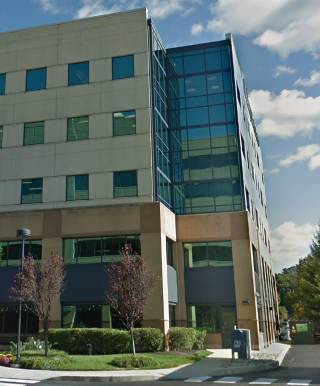
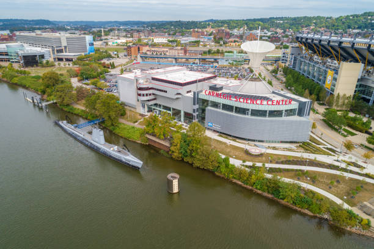
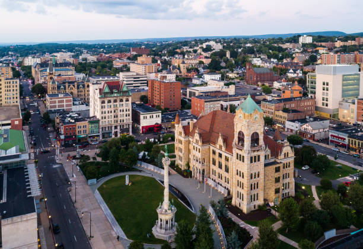
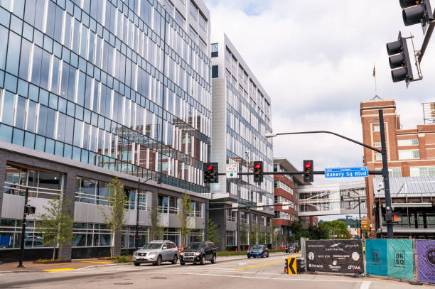
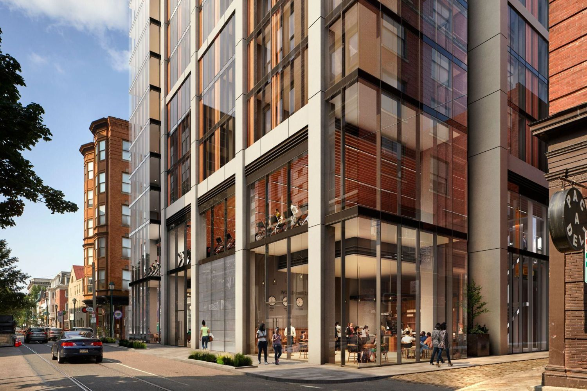
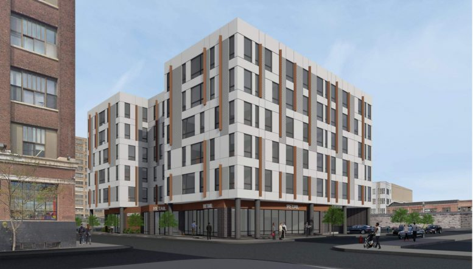
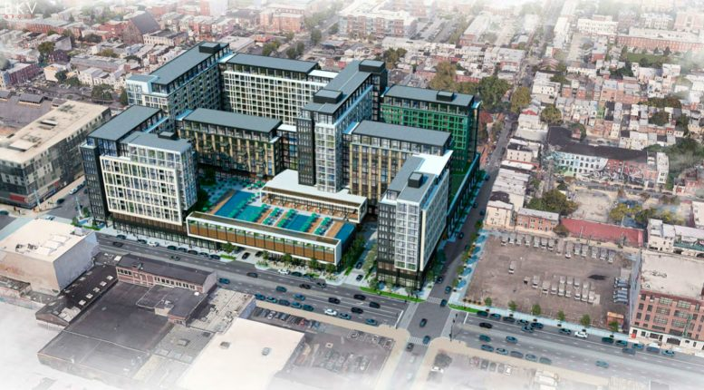

Welcome to Pennsylvania!
10,000+ Pennsylvania Listings Updated DailyBuy, Sell, and Rent Pennsylvania Properties with Amo Realty
Looking to buy, sell, or rent real estate in the state of Pennsylvania? Do yourself a favor and connect with our experts to get where you need to be fast! Since 2007, our trusted real estate brokerage has been providing exceptional, cutting-edge services to customers seeking homes for sale and properties for rent across numerous metro areas. Our dedicated team can help you achieve your goals quickly and efficiently, so sign up to browse our up-to-the-second listings now!
1000s of PA Listings Updated Daily
Whether you’re buying a home for the first time in metro Philly, seeking a rental in Pittsburgh, or looking to sell a home in Scranton, we are the ultimate source for continually updated MLS listings for properties for sale across PA. Our database also includes listings for properties for rent from all major metropolitan areas in the state, from Allentown to Erie, allowing you to find the perfect new home in no time.
Sign Up to Search Listings
Check current availability for homes, condos, townhouses, and apartments for sale and rent across PA. In no time, you’ll have a good idea of what is currently available within your chosen parameters. Specify your criteria for everything from price range to home size, and our powerful search tool will do the rest. With Amo, you can skip to the front of the line, easily zeroing in on terrific options that suit your needs to a T.
Access PA MLS Listings Right This Second
We maintain a vast online database of continually updated property listings for options across the state. Culled from the MLS and other dependable sources, our listings help you gain an instant understanding of what is available within your chosen geographic area. Whether you need to rent a place near Erie or want to purchase a condo in Philadelphia, our massive, constantly updated database will get you the info you need in no time flat, saving you time and effort and helping you hit the ground running with your search.
Use Our Power Search Tool to Pinpoint What You Need
Our goal is to make the process of buying, selling, or renting properties as quick, easy, and stress-free as possible. At the same time, we want our clients to get the most bang for their buck – and our powerful search tool makes that a snap.
Using our search tool for homes for rent or for sale across the Quaker State is one of the best ways to jump-start your search. By inputting your preferences for parameters ranging from location to budget, you can zero in on viable options in a few quick minutes.
Once you’ve availed yourself of our search tool and pinpointed PA listings that meet your requirements, you can keep things moving right along by arranging visits to properties on your list. Amo can help with that too; read on to find out how!
Browse In-Depth Listings to Get Up to Speed Fast
Because we include listings from the MLS and other reputable sources in our database, you can rest assured of getting prime info right from your screen. In particular, the MLS has specific guidelines that realtors must adhere to when completing listings. Certain pieces of information must always be required, so you don’t have to worry about being left in the dark about important things.
In a single property listing, you can find out when a property was built, what kind of HVAC system it uses, what kinds of materials it is built out of and so much more. In many cases, you will get a list of items that have recently been replaced or upgraded, allowing you to understand the condition of a home before stepping foot in it.
We are also pleased to offer property listings with dozens of clear, colorful photos, allowing you to get a sense of how a place looks and feels without having to leave home. In many cases, listings include virtual tours that let you explore properties from afar, giving you an even better feel for whether or not a property is up your alley. Some also include videos made by our agents, who provide insights regarding the properties they represent.
Sign Up for Email Updates
More than ever, the RE market is extremely fast-paced and competitive. We can keep you up to date at all times through personalized email updates for properties that meet your requirements. Whenever a property hits your desired market with the primary attributes you want, you’ll receive an email alert with the pertinent details. In a flash, you can find out about new options in Philadelphia, Pittsburgh, or elsewhere in the Keystone State, giving you a crucial edge and allowing you to find what you need as quickly and effortlessly as possible.
Connect with Our Experienced Real Estate Agents
Regardless of where you are in your search for rentals and homes for sale, you can always contact us for a referral to an agent in your desired part of the state. We have satellite offices in many metro areas and our agents know local markets like the back of their hand. With their insights, you can quickly pare down your list further, zeroing in on options that help you reach your goals.
Thanks to our free online database of searchable listings, you can hit the ground running on your search. By getting a referral to a skilled local agent or broker, you can keep the momentum going. Whether you’re looking to buy, sell, or rent in Harrisburg, Bethlehem, or Pittsburgh, we can connect you with a skilled, licensed agent with in-depth experience with your desired local market.
With help from a talented, licensed agent in Philly, Scranton, or elsewhere across the state, you can set up tours of properties that meet your initial requirements. Our agents can also keep you up to date regarding open houses and other opportunities in your desired metro areas. Our talented brokers and agents have in-depth knowledge regarding the areas and markets they serve, giving you a great upper hand when seeking homes.
Our brokers and agents often have access to off-market listings, giving you yet another opportunity to secure the perfect home or rental fast. In major metro areas, our team members are familiar with major rental properties and condo buildings, making it easy for you to pinpoint places that meet your needs. Even in fast-paced, highly competitive markets across the state, Amo Realty can assist you in buying, selling, or renting the ideal single-family home, apartment, condo, or townhouse.
Why Amo Realty for Buying, Selling, and Renting?
From the comfort of home, you can search online listings for whatever you need and take many important initial steps. However, to zero in on the perfect place fast, it pays to connect with us from square one.
We know you have plenty of options for finding properties. However, by signing up with us from the start of your search, you’ll enjoy the easiest, most streamlined experience.
Some of the top reasons to sign up with us when buying, selling, or renting properties in PA include:
- Up-to-the-Second Property Listings - Sign up via this page for instant, free access to our continually updated listings. Culled from the MLS and other top-notch sources, our database includes listings from metro areas across the state ranging from Pittsburgh to Harrisburg. Whether you want to buy a new home somewhere in Western PA or want to rent a condo in Allentown, you can search our listings to zero in on whatever you need in no time flat.
- Incredible Marketing Reach - If you need to sell a property, we can get you the exposure you need fast. We maintain well more than 100 highly ranked websites, drawing in huge volumes of targeted traffic day in and day out. Amo also has an extensive social media presence, including a LinkedIn profile with more than 10,000 followers. By signing up with us, you can sell your property as quickly as possible - and get the most for it too.
- Powerful Search Tool - Quickly narrow down your search while browsing our database with our powerful search tool. Input your preferences for everything from the number of bedrooms to price range, and our tool will provide you with a list of options in no time.
- Online Resources We know the ins and outs of property markets across dozens of regions. Gain useful insights into renting, buying, or selling properties across the Quaker State via our highly informative website.
- Talented Agents and Brokers - It pays to have someone on your side who knows the local market and properties like the back of their hand. Finding the perfect broker or agent in Allentown, Harrisburg, Pittsburgh, or elsewhere in the state is as easy as can be. Just contact us and let us know what you need; we will connect you with a skilled, experienced, licensed agent or broker right away. With their assistance, you will be able to navigate local property and rental markets like a pro, zeroing in on options that meet your guidelines perfectly.
- Personal Service - As a boutique-style brokerage, we take pride in offering a personalized level of service to our valued clients. When you are paired with an agent, you can rest assured of being connected with a consummate professional who can help you find what you need based on your preferences. Your agent or broker will get up to speed about your criteria, including specific areas or neighborhoods you like, to have the clearest picture possible. From there, they will alert you to properties that closely match your criteria while providing advice about the neighborhood or area.
- Proven Experience - We opened in 2007 and have years of experience in assisting home buyers, home sellers, and renters with their needs. We’ve applied what we’ve learned to provide you with the absolute best service for locating properties for sale or rent. By connecting with us, you’ll gain a valuable competitive edge, whether you need to sell a home or need to buy or rent one.
Buying, selling, or renting a home in the Quaker State can be a tall order – especially in today’s fast-paced and competitive market. Instead of going it alone, connect with us today to locate homes for sale and rent, including Philadelphia, Pittsburgh, Erie, Harrisburg, Allentown, and more.
Sign up to search our listings now to hit the ground running. When you’re ready, contact us for a referral to an experienced, licensed broker or agent in the PA community of your choice. The Amo Realty team can’t wait to assist you, so contact us today for more information.
Meet Our Agents
Connor Fellin
Covering Boyertown, Reading, Philadelphia area
Ashley Freese
Covering Reading, Philadelphia area
Gregory Goldberg
Covering Philadelphia
Brian Palmer
Covering Pittsburgh area
Pennsylvania Real Estate News
Stay tuned for updates on news stories about the Pennsylvania real estate market. We provide essential insights backed by years of local expertise, aiding investors, renters, and homeowners alike in navigating the volatile and rapidly changing market. Our comprehensive coverage an in-depth analysis shedding light on the underlying factors shaping trends such as tech industry growth and local policies. With a commitment to accuracy and transparency, we serve as a trusted source, fostering a community of like-minded individuals for networking and collective learning, making it a valuable resource for anyone seeking to stay informed and make informed decisions in the dynamic Pennsylvania real estate landscape.
-
Developer Unveils Vision for 4-Star Hotel and Prominent Food and Beverage Venue at Former Family Court Building
Philadelphia's iconic former Family Court building is poised for a transformative redevelopment, as a prominent developer announces plans to transform the historic structure into a luxurious 4-star hotel and destination food and beverage venue. The ambitious project aims to breathe new life into this architectural gem while preserving its rich history and heritage.
-
Philadelphia Building Boom: Challenges and Innovations in a Growing Skyline
Philadelphia's skyline is experiencing a renaissance, marked by a surge in construction projects that have transformed the city's urban fabric. However, this boom has led to an unexpected consequence: heightened competition among developers vying for tenants in an increasingly crowded market.
-
Boomi Unveils Cutting-Edge 42,000-Square-Foot Headquarters in Conshohocken
Boomi, a leading provider of cloud-based integration platforms, has solidified its commitment to innovation and growth with the opening of its new state-of-the-art headquarters in Conshohocken, Pennsylvania. Spanning an impressive 42,000 square feet, the new facility represents a significant milestone for the company as it continues to expand its operations and presence in the region.
-
Comcast Spectacor Unveils Ambitious Development Plan for South Philadelphia Sports Complex by 2028
Comcast Spectacor, the renowned sports and entertainment company, has revealed an ambitious development plan that could potentially transform the landscape of the South Philadelphia Sports Complex by 2028. The plan, which encompasses a wide range of projects and enhancements, aims to elevate the fan experience, revitalize the surrounding area, and solidify Philadelphia's reputation as a premier destination for sports and entertainment.
-
Carnegie Science Center Plans $90M Expansion on Pittsburgh's North Shore
The Carnegie Science Center, a beacon of scientific exploration and education in Pittsburgh, is embarking on an ambitious $90 million expansion project that promises to further elevate its status as a premier destination for learning and discovery. Located on the city's vibrant North Shore, the Science Center has long been a hub of innovation and inspiration, attracting visitors of all ages with its interactive exhibits, immersive experiences, and educational programs.
-
Pittsburgh: Why It's Just Right for Real Estate Investing
Real estate investment requires research, foresight, and timeliness. You have to know both what is happening and what will likely happen, and you have to strike when the iron is hot. Pittsburgh itself is replete with outstanding real estate investment opportunities. The positive real estate trends don't just pertain to the residential real estate sector, however. There are more than 120 million square feet of commercial real estate in Pittsburgh, and despite a rising vacancy rate, absorption is increasing, indeed, many Class-B properties are being converted to residential and/or hospitality properties.
-
Real Estate Investing in Scranton
The Pennsylvania real estate market has gone through a lot of changes lately. One of the most intriguing locations for investors is the Scranton region. Though this area has often gone under the radar, it has developed a lot of promising features. Keep reading to discover everything you need to know about investing in this area.
-
Real Estate Investors Flocking to Temple University Area
Increasing numbers of out-of-state Temple University students have intrigued investors interested in investment properties. The university has seen out-of-state enrollment spike by 35%, making the area a brilliant choice for buying properties to accommodate new residents.
-
Why Now Is the Time to Invest in the Poconos Real Estate Market
Are you ready to invest in the Poconos real estate market? The Pocono Mountains encompass 2,400 square miles of natural beauty. Visitors and residents can enjoy hiking, mountain biking, fishing, boating, whitewater rafting, hunting and swimming. The area even has several adventure parks. With so many things to do, it’s no wonder that the Poconos attracts between 27 and 30 million visitors each year, and as an investor, you have the opportunity to attract vacationers to your property. Let’s take a look at all the great reasons to invest in the Poconos region.
-
Office-to-Residential Conversions in Philadelphia
In the last few years, there has been a permanent shift in the way people work. Today, around 14% of American adults work from home on a full-time basis. Thanks to this tectonic shift, the market has had to adjust. Companies don’t need as many office buildings, so many of these structures are getting converted into apartments.
-
The Frame Philadelphia
The beauty of an old city like Philadelphia is that there are many fascinating architectural styles to appreciate. Modern architecture is another plus that blends seamlessly into the city. One of these latest developments is turning heads for its striking futuristic appeal. The building is called "The Frame" and features 114 luxury apartment units within a 7-story building at 1440 N. Front St. next to the El or Market-Frankford elevated train line.
-
901 North Penn Street Philadelphia

Get ready, Northern Liberties! Something significant is coming to 901 North Penn Street. A brand-new development is about to pop up where an empty lot used to be, and this complex is not just another cookie-cutter structure. HDO Architecture has put a great deal of thought into the design to make certain that it not only complements the surrounding area but also stands out as a modern piece of architecture. It's going to be seven stories tall and have 193 units for residential use. That's a lot of new neighbors!
-
204 South 12th Street in Midtown Village, Center City Philadelphia
With the completion of the luxury high-rise, mixed-use residential building at 204 South 12th Street in Midtown Village, Center City, Philadelphia, apartment seekers received yet another new set of fantastic options for housing in Philly.
-
1201-15 Callowhill Street
An innovative mixed-use complex is planned for 1201-15 Callowhill Street in Lower North Philadelphia. The approved plans for the new complex reveal a modern six-story building that will house an underground garage, retail space, office sites, and co-living spaces. This unique design, crafted by the professionals at JKRP Architects, is visually appealing and environmentally friendly. With its co-living design, which may include almost 240 beds, the complex is set to attract a diverse range of residents, from young professionals to students and digital nomads.
-
1001 South Broad Street in Hawthorne, South Philadelphia
There's something exciting happening at Broad and Washington these days. Construction of a new complex — boasting over 1,100 units — is taking place. In an area that has been generating a great deal of buzz within the past few years, it's thrilling to catch a glimpse of the astounding progress as ground is being broken on this 1,516,218-square-foot project. Indeed, 1001 South Broad Street is shaping up to be something truly transformative. With South Philly real estate in hot demand over the past decade, many prospective buyers and renters have been dismayed by the lack of availability or options in the area. This new development, designed by the innovative team over at BKV Group, provides 15 stories of housing for people who have always wanted to snap up something in the neighborhood. For those who'd like an alternative to the ubiquitous row homes that seem to dominate the area, these units will be very enticing.
-

-
-
-